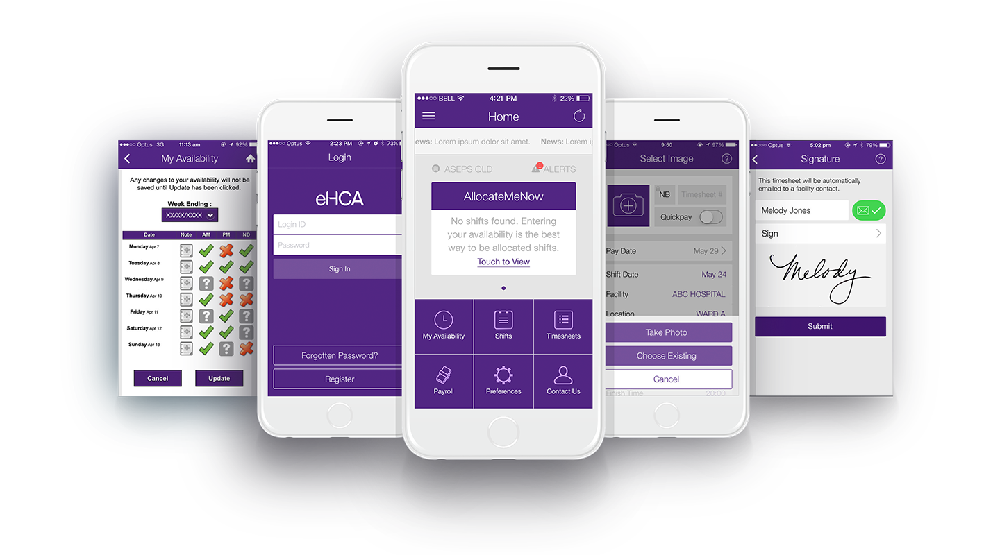

<!doctype html>
<html>
<head>
<meta charset="UTF-8">
<title>Case Study: Healthcare Australia | Digital Innovation made with Design Thinking</title>
<meta name="keywords" content="Enabled, Enabled Solutions, Adelaide, Australia, mobile, mobile applications, iPhone developers,iPad developers,cross platform developers, Android developers, ios developers, Adelaide, digital media, websites, CMS websites, design, branding, digital design, video, motion, touch" />
<meta name="description" content="Helping you manage digital disruption since 1999 with services such as mobility solutions, user experience design, product development, omnichannel retail, iOS, Android" />
<meta name="viewport" content="width=device-width, initial-scale=1.0">
<meta name="robots" content="follow">
<meta name="revisit-after" content="3 days">
<link href="https://fonts.googleapis.com/css?family=Lato:300,300i,400,400i,700,700i,900,900i|Open+Sans:300,300i,400,400i,600,600i|Roboto+Slab:100,300,400,700" rel="stylesheet">
<link href="css/casestudy.css" rel="stylesheet" type="text/css">
<link href="css/enabled_style.css" rel="stylesheet" type="text/css">
<link href="css/responsive.css" rel="stylesheet" type="text/css">
</head>

<body class="case-study">
<div id="wrapper">
  <div id="header" class="case-study">
    <div class="container">
      <div id="top">
        <div id="logo"> <a href="index"></a></div>
        <div id="menu"> <a href="#" class="nav-icon" id="trigger-overlay"><span></span> </a> </div>
      </div>
    </div>
  </div>
  <div class="overlay overlay-enabled">
    <div class="container">
      <button type="button" class="overlay-close">Close</button>
    </div>
    <nav>
      <ul>
        <li><a href="index">Home</a></li>
        <li><a href="ourwork">Work</a></li>
        <li><a href="services">Services</a></li>
        <li><a href="http://blog.enabled.com.au">Blog</a></li>
        <li><a href="team">Team</a></li>
        <li><a href="letschat">Let's Chat</a></li>
      </ul>
    </nav>
  </div>
  <div id="content-holder">
    <div class="hca-purple">
      <div class="project-intro">
        <div class="container">
          <div class="intro-left">  </div>
          <div class="intro-right">
            <h3>Healthcare Australia (HCA) is Australia’s leading healthcare recruitment solutions provider of nursing staff, aged care workers and medical specialist placements with operations in every state and territory.</h3>
          </div>
        </div>
      </div>
    </div>
    <div class="image-holder no-top-spacing no-bottom-spacing">  </div>
    <div class="grey2">
      <div class="container">
        <div class="project-onecolumn no-top-spacing no-bottom-spacing">
          <h1>Laying a foundation for digital health</h1>
        </div>
        <ul class="three-columns" id="laying-foundation">
          <li>
            <div class="info">
              <div class="info-icon"></div>
              <div class="info-text">
                <h4>Challenge</h4>
                <p>HCA’s paper timesheet process was creating a huge burden for the payroll division. It also meant slow payment processing for health workers.</p>
              </div>
            </div>
          </li>
          <li>
            <div class="info">
              <div class="info-icon"></div>
              <div class="info-text">
                <h4>Solution</h4>
                <p>We created iOS and Android apps to replace their current paper timesheets system. HCA’s clients – healthcare facilities – could also use the apps to streamline approval process. </p>
              </div>
            </div>
          </li>
          <li>
            <div class="info">
              <div class="info-icon"></div>
              <div class="info-text">
                <h4>Results</h4>
                <p>This provides a graceful transition from paper to fully electronic timesheets. Health care workers get paid faster while fraud is virtually eliminated. </p>
              </div>
            </div>
          </li>
        </ul>
      </div>
    </div>
    <div class="image-holder no-top-spacing no-bottom-spacing">  </div>
    <div class="grey2" id="timesheets">
      <div class="container">
        <div class="project-onecolumn no-bottom-spacing">
          <h1>Improving timesheet security and efficiency</h1>
          <h3 class="sub-header text-teal">Business Challege</h3>
        </div>
        <div class="project-twocolumns no-top-spacing text-darkgrey">
          <div class="column-left">
            <p>HCA’s existing paper timesheet process for authorising shifts, in short, was:</p>
            <ul class="steps-taken timesheet-security">
              <li>Healthcare staff filled in paper timesheets after a shift at any healthcare facility.</li>
              <li>They faxed, posted or dropped the timesheets in person. </li>
              <li>HCA processed them for payment. </li>
            </ul>
          </div>
          <div class="column-right">
            <p>It worked for HCA until the staff started using their mobile phones to photograph timesheets and email them to HCA. </p>
            <p>The sheer quantity of these emailed timesheets was creating a significant burden for HCA’s payroll division to track, process and archive these photographs. </p>
          </div>
        </div>
      </div>
    </div>
    <div class="gradient-lilacspurple gradient" >
      <div class="container">
        <div class="project-onecolumn  no-bottom-spacing">
          <h1>Exploring the needs <br>
            of all parties </h1>
        </div>
        <div class="project-twocolumnwide column">
          <div class="column-left-short text-darkgrey">
            <p>HCA serves as a bridge between healthcare professionals and healthcare facilities such as hospitals. Thus, it was vital that Enabled understood the pain points of three “users” in this project. </p>
            <p>While HCA had already deployed a web portal as well as mobile website, they felt a secure native mobile app would be worth the additional investment. </p>
            <p>Health workers want fast and accurate payment. HCA’s clients - healthcare facilities - want fast shift authorisation while avoiding sudden disruption to their normal workflow. </p>
            <h3>Steps taken</h3>
            <ul class="steps-taken">
              <li>Process mapping</li>
              <li>User journey mapping</li>
              <li>Technology audit</li>
              <li>Solution design</li>
            </ul>
          </div>
          <div class="column-right-xwide column">  </div>
        </div>
      </div>
    </div>
    <div class="image-holder lilac no-top-spacing no-bottom-spacing">  </div>
  </div>
  <div class="gradient-blackgrey gradient">
    <div class="container">
      <div class="project-onecolumn no-top-spacing ">
        <h1>Development</h1>
        <div class="onecolumn text-pale-teal">
          <p>Enabled built iOS and Android apps with timesheet functions, which also displayed the mobile-web components that HCA had already deployed, creating a single integrated tool for their healthcare professionals.</p>
        </div>
        <div class="video-container">
          <iframe width="560" height="315" src="https://www.youtube.com/embed/X98NcPbKF_E" frameborder="0" allowfullscreen></iframe>
        </div>
        <div class="onecolumn text-pale-teal">
          <p>We also created two promotional videos, one for HCA’s clients and one for health workers, which also serves as an instructional video for their induction process.</p>
        </div>
      </div>
    </div>
  </div>
  <div class="image-holder  no-top-spacing no-bottom-spacing">  </div>
  <div class="light-teal"> 
  	<div class="container">
    	<div class="project-onecolumn no-top-spacing">
       </div>
      <div class="project-twocolumns no-top-spacing">
        <div class="column-left-wide column text-darkgrey">
        <h2 class="text-royalblue">Hybrid Mobile App</h2>
          <p>However, the hybrid app didn’t give healthcare staff a satisfactory user experience at first due to the web components lagging. </p>
			<p>Enabled fixed this by rebuilding the starting screen and navigation of the app into native components. </p>
        </div>
        <div class="column-right-short column">
          <h3 class="text-royalblue">Steps taken</h3>
          <ul class="steps-taken text-darkgrey">
            <li>UX / UI Design</li>
            <li>Video Production</li>
            <li>App Development</li>
            <li>Systems Integration</li>
          </ul>
        </div>
        <br class="clearfloat">
      </div>
    </div>
  </div>
  <div class="gradient-purple gradient">
  	<div class="container">
    	<div class="project-onecolumn no-bottom-spacing">
      		 <div class="onecolumn">
             	<h1>Enabling mobility for everyone </h1>
                <p>It was crucial the new app did not introduce any new pain points for clients as any difficulties could make them reconsider the use of HCA’s staff. </p>
				<p>Working with HCA’s head of IT, we developed a plan to gently introduce the app to their clients so as to maximise acceptance.  </p>
             </div>
        	 
        </div>
        <div class="project-twocolumns no-top-spacing">
          <div class="column-left">
            <p>To reduce initial impact to their clients’ normal workflow, the details of a shift would be displayed on a HCA staff member’s phone. If these details were correct, a supervisor at the facility would sign their signature on-screen with a finger or stylus just as they would on paper, thus no extra work. </p>
<p>As acceptance grows, HCA’s clients can gain additional integration by registering supervisors with HCA’s system to authorise a shift via a PIN or password, making the process fully electronic</p>
           
          </div>
          <div class="column-right">
            <p>To encourage a full adoption of the mobile app, we ironed out the last pressure point for HCA’s staff during the user testing stage. They needed the ability to determine when pay landed in their bank account so that various benefit payments were not unduly affected.</p>

<p>Enabled added new feature that allows the selection of a payment date, giving back the ability for staff to smooth out bumps in pay across a fortnight. </p>
          </div>
        </div>
        <div class="project-onecolumn no-bottom-spacing no-top-spacing">
            <div class="onecolumn">
                <p><span class="text-white">For more information go to </span><a href="https://www.healthcareaustralia.com.au/ehca-app/" target="_blank">eHCA app</a></p>
            </div>
        </div>
    </div>
  </div>
  <div class="white" id="hca-results">
  	 <div class="project-twocolumnwide column">
          <div class="column-left-short text-darkgrey">
          <h1>Results</h1>
            <p>An app with both functional and user experience benefits:</p>
            <br />
            <h3 class="text-royalblue">Steps taken</h3>
            <ul class="steps-taken text-darkgrey">
              <li>In-app notifications to keep staff informed of obligations and new shifts. </li>
              <li>Reduction of paper use and payroll workload.</li>
              <li>Staff are paid faster through automated verification.</li>
              <li>Security and compliance 
has improved. </li>
            </ul><br><br />
          </div>  
    </div>
  </div>
  <div class="grey2">
    <div class="text-center grey3 other-stories">
      <div class="container">
        <h2>Read other success stories</h2>
        <ul class="three-columns">
          <li>
            <div class="feature-casestudy">
              <div class="feature-casestudy-image casestudy2"><a href="casestudy-CCA">CCA</a></div>
              <div class="feature-casestudy-text">
                <h4>Coca Cola Amatil</h4>
                <p>By mixing point of delight with point of sale, the food and beverage producer scores customer engagement, sales and an award. </p>
                <a href="casestudy-CCA" class="view-casestudy">View Case Study</a> </div>
            </div>
          </li>
          <li>
            <div class="feature-casestudy">
              <div class="feature-casestudy-image casestudy4"><a href="casestudy-RAA">RAA</a></div>
              <div class="feature-casestudy-text">
                <h4>RAA</h4>
                <p>The automobile club strengthens its “Members-first” motto by being where customers need it most.</p>
                <a href="casestudy-RAA" class="view-casestudy">View Case Study</a> </div>
            </div>
          </li>
          <li>
            <div class="feature-casestudy">
              <div class="feature-casestudy-image casestudy1" ><a href="casestudy-Clipsal">Clipsal</a></div>
              <div class="feature-casestudy-text">
                <h4>Clipsal by Schneider Electric</h4>
                <p>Getting people excited about electrical accessories is not an easy job. But Clipsal with its omni-channel approach has won customers over. </p>
                <a href="casestudy-Clipsal" class="view-casestudy">View Case Study</a> </div>
            </div>
          </li>
        </ul>
      </div>
    </div>
    <div class="action-left dark-purple">
      <div class="container">
        <div class="action-header">
          <h5>so what's next?</h5>
          <span class="action-title">Got A Project? <a href="letschat">Let's Chat.</a></span> </div>
      </div>
    </div>
  </div>
  <div id="footer">
    <div class="container">
      <div id="footer-logo"><a href="index"></a></div>
      <div id="footer-contactinfo">176 Wattle Street, Malvern SA 5061, Australia / <strong>Phone:</strong>+61 8 8272 6658</div>
      <div id="footer-buttons"> <a href="https://twitter.com/EnabledHQ" class="footer-social footer-twitter" target="_blank">Twitter</a> <a href="https://plus.google.com/114229602705129044359/" class="footer-social footer-googleplus" target="_blank">Google Plus</a> <a href="https://www.linkedin.com/company/enabled-solutions" class="footer-social footer-linkedin" target="_blank">LinkedIn</a> <a href="https://dribbble.com/EnabledHQ" class="footer-social footer-dribbble" target="_blank">Dribbble</a> <a href="https://www.instagram.com/enabledhq/" class="footer-social footer-instagram" target="_blank">Instagram</a> <a class="btn button-letschat" href="letschat">Let's Chat <span class="icon">&#8595;</span></a> </div>
    </div>
  </div>
</div>
<script type="text/javascript" src="//code.jquery.com/jquery-1.11.0.min.js"></script> 
<script type="text/javascript" src="//code.jquery.com/jquery-migrate-1.2.1.min.js"></script> 
<script src="js/modernizr.custom.js"></script> 
<script src="js/classie.js"></script> 
<script src="js/enabled_scripts.js"></script> 
<script>
  (function(i,s,o,g,r,a,m){i['GoogleAnalyticsObject']=r;i[r]=i[r]||function(){
  (i[r].q=i[r].q||[]).push(arguments)},i[r].l=1*new Date();a=s.createElement(o),
  m=s.getElementsByTagName(o)[0];a.async=1;a.src=g;m.parentNode.insertBefore(a,m)
  })(window,document,'script','//www.google-analytics.com/analytics.js','ga');

  ga('create', 'UA-3067311-1', 'auto');
  ga('send', 'pageview');

</script>
</body>
</html>
